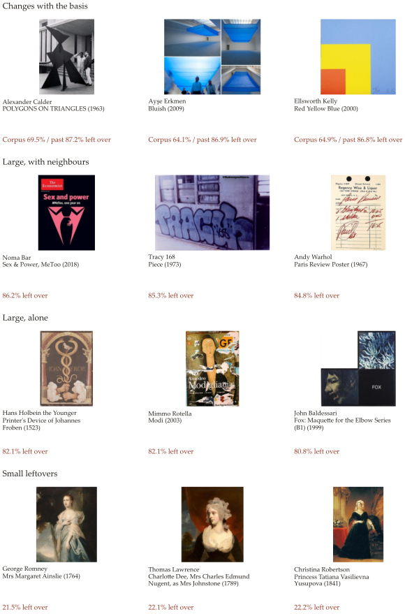
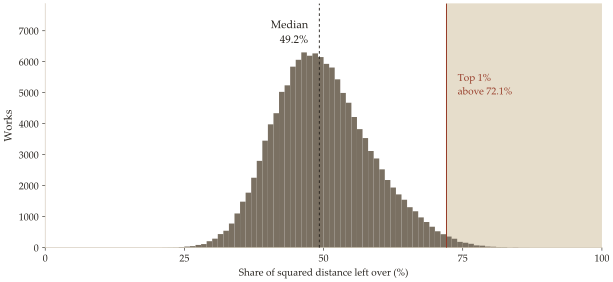
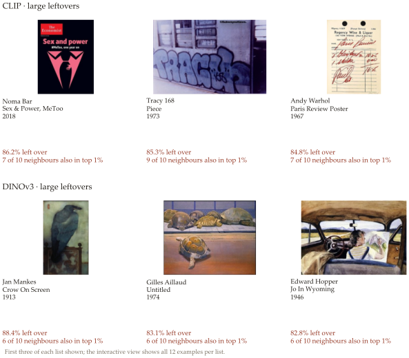

Q4 What is left over for each work, and compared with which past?
In CLIP, the corpus’s 32 leading directions (the ones along which its works vary most) miss about half of a typical work, and the 1% they miss most mostly come in kinds (graffiti, posters). Which works those are depends on the past we measure against, as under a basis from the works before 1900 only about a third of them stay in the top 1%.
Q2 and Q3 looked at groups of works. Now each work on its own: how much of it do the corpus’s leading directions miss, and do the works they miss most come in kinds, or stand alone? And compared with which past, the whole corpus or the corpus up to some date? We look at it in CLIP, in 6 steps, with the images after them (below) and the other encoders at the end:
- We take the basis of the whole corpus, i.e., its average and its 32 leading directions, as in Q2. Here there is no cap per artist.
- For each work we take its leftover, i.e., the part the 32 directions miss (Q3). Its leftover share is how much of its squared distance from the average that leftover makes up, and below, a large leftover means a large leftover share.
- We rank the works by it and look at the top 1%, the 1,324 works the basis describes worst.
- We check whether they come in kinds or stand alone: for each, how many of its 10 nearest works by leftover are in the top 1% too.1
- We ask which past: we do it all again with a basis from the works before 1900 only, and compare the two top-1% lists.
- We do it in all 3 encoders, and once more with one work per artist.2
![A quarter circle with a work at its measured angle from the axis along the 32 directions; the leftover share is the square of the sine of that angle. Six artworks (Romney, Hamilton, Kelly, Calder, Rotella, Noma Bar) are marks on the arc, joined by leaders to labelled thumbnails on an outer ring. Dashed and solid rays mark the whole-corpus median and the top-1% cut, and a shaded wedge is the top 1%. A right triangle for Calder shows the described part along the axis and the leftover part off it. Left panel: basis from the whole corpus; right panel: basis from the works before 1900, which includes those works and uses its own average, where Calder, Kelly and Hamilton move up and Rotella moves down. Artist, title and year are listed beneath.](figures/q3_fan.svg)
A. In all 3 encoders, which works are described worst depends on the past we measure them against. In CLIP, under a basis from the works before 1900, only about a third of the top 1% stays. The largest new entries include later abstraction, sculpture and installation, which the past has little of. Under the whole corpus’s basis these works rank high but below the top 1% (Figure 2).3
![Line chart of median leftover share by decade, 1700 to the 2020s (1800 to the 2020s on a phone). A black line is the whole-corpus basis and a red line the basis from the works before 1900; the years before 1900 are shaded because the basis from before 1900 is fit on those works, and the two lines stay close there. After 1900 they part: in the 1960s the medians are .513 and .653. Four works are drawn as vertical stems from their share under the corpus basis (hollow dot) to their share under the basis from before 1900 (red dot): Alexander Calder, Polygons on Triangles, 1963, .695 to .872; Ellsworth Kelly, Red Yellow Blue, 2000, .649 to .868; Ayse Erkmen, Bluish, 2009, .641 to .869; Richard Hamilton, A Beautiful Little Shit for Dieter, 1971, .240 to .465. Each work has its thumbnail with artist, title and year beneath it. Thumbnail positions and the leaders to the stems are drawn, not measured.](figures/q3_two_pasts_v2.svg)
Compare individual works under the two bases

B. In all 3 encoders, the works described worst mostly come in kinds. In CLIP, 73% of them have another top-1% work among their 10 nearest (83% in DINOv3). On average 2 of those 10 are top 1% too, about 20 times chance. In CLIP, half of the 12 largest leftovers are graffiti. By genre, the basis describes architecture, posters, photographs, animal paintings and installations worst.4
![Ten squares per row show how many of a work's 10 nearest works by leftover are also in the top 1%, with the artwork, artist, title and year as each row's label. Yardstick rows: 0.10 of 10 by chance and 2.15 of 10 on average for the 1,324 top-1-percent works. Kinds: Dondi 1979 has 10, Tracy 168 1973, Cope2 1984 and Lee Quinones 1979 have 9, Noma Bar 2018 and Andy Warhol 1967 have 7. No top-1-percent neighbour: Hans Holbein the Younger 1523, Mimmo Rotella 2003, John Baldessari 1999, Elina Brotherus 2015, Stanley Brouwn 1975 and Ian Burn 1993 all have 0. Measured counts, not schematic.](figures/q3_seats_v2.svg)
We also notice that about half of a typical work is left over (Figure 5), more for later works.5 A quarter of the top 1% have no top-1% work among their 10 nearest, though almost all have one in the top 10%.6 The ranking is stable when the basis is refit.7 In CLIP the works described best are mostly portraits, many of the 18th century.8

What do the works at the two ends of the ranking look like?
By eye, the works with the smallest leftovers look like familiar paintings. Among the largest, those with many top-1% neighbours fall into a few kinds we can name, and those with no top-1% neighbour are a heterogeneous set with no shared motif. This is our own reading of the examples in Figure 6, as a non-expert, and it is not a measurement.9
We put the images next to the ranks and look, in 2 steps:
- In each encoder we take three lists of 12 works, at most 2 per artist: the smallest leftovers, the largest that have five or more top-1% works among their 10 nearest by leftover, and the largest that have no top-1% work among those 10 (step 4 above).
- We look at the images of each list and note what the list shares.
C. By eye, CLIP’s large leftovers with many top-1% neighbours look like kinds we can name. Each feels distinctive, but the kinds recur: graffiti, posters, stamps, and paintings with a visual character of their own. CLIP’s twelve look mostly like graffiti and posters, as in B, with others like magazine material, notes or postcards. The stamps are in SigLIP’s twelve.10
D. By eye, CLIP’s large leftovers with no top-1% neighbour share no motif we could name. Each looks distinctive in its own way. Among CLIP’s twelve, some look like photographs of installations or of artworks, some like photographs of magazines, and some like work on canvas. Every one of these works has neighbours, just none of its 10 nearest in the top 1%.11
We also notice that the smallest leftovers look like familiar paintings, some with visible brushwork. CLIP’s twelve are mostly portraits, mostly of women.12 Are such paintings described best because the corpus has many like them?13
So this is how the 2 ends of the ranking look by eye.14
![A grid of 108 artwork thumbnails, three encoders (CLIP, SigLIP, DINOv3) across and three lists down: smallest leftovers, largest leftovers with neighbours, largest leftovers alone. Each list shows 12 works in rank order. Under each list a bar from 0 to 100% marks the encoder's corpus median and the range of leftover shares of the 12 works: 21.5 to 24.4% for CLIP's smallest, 11.5 to 13.6 for DINOv3's smallest, 82.4 to 86.2 for CLIP's largest with neighbours, 78.7 to 82.1 for CLIP's largest alone. The artist, title, year and share of every work are on hover or focus and in the credit list beneath the figure. Layout is a plain grid; shares are measured.](figures/q4_grid.svg)
Credits and leftover shares, all 108 works (WikiArt)
CLIP, smallest leftovers
- George Romney, Mrs Margaret Ainslie, 1764: 21.5% left over
- Thomas Lawrence, Charlotte Dee, Mrs Charles Edmund Nugent, as Mrs Johnstone, 1789: 22.1% left over
- Christina Robertson, Princess Tatiana Vasilievna Yusupova, 1841: 22.2% left over
- Antoine Pesne, Portrait of Henriette von Zerbsten, 1726: 22.8% left over
- Thomas Gainsborough, Portrait of Grace Dalrymple Elliott, 1778: 23.2% left over
- George Romney, Miss Hariot Milles, 1781: 23.3% left over
- Jean Auguste Dominique Ingres, Madame Desire Raoul Rochette, 1830: 23.5% left over
- Charles Turner, Eleanor (née Watts), Lady Wigram, 1817: 23.5% left over
- Joshua Reynolds, Mrs. Trecothick, Full Length, in Turkish Masquerade Dress, Beside an U, 1771: 23.8% left over
- Richard Hamilton, A Beautiful Little Shit for Dieter, 1971: 24.0% left over
- Benjamin West, Portrait of Ann Barbara Hill Medlycott, 1788: 24.3% left over
- John Hoppner, Lady Elizabeth Howard, 1798: 24.4% left over
SigLIP, smallest leftovers
- Jack Tworkov, Untitled, 1950: 23.6% left over
- Helmut Sturm, Untitled, 1989: 24.4% left over
- Hans Hofmann, Summer Night’s Bliss, 1961: 24.7% left over
- Romul Nutiu, Ball Agenda II, 2008: 25.0% left over
- George Romney, Lady Henrietta Cavendish-Bentinck (1737–1827), Countess of Stamford, 1790: 25.3% left over
- George Lambert, Landscape with Figures, 1757: 25.7% left over
- Romul Nutiu, Invasion of the Colors (from the series Memory Pyramid), 2011: 25.8% left over
- Eugene Boudin, Park Cordieres a Trouville, 1873: 25.9% left over
- Esteban Vicente, Faraway, 1970: 25.9% left over
- Vasily Polenov, Italian landscape with a peasant, 1874: 26.1% left over
- Olivier Debre, Composition abstraite, 1978: 26.2% left over
- Maria Blanchard, Composición, 1918: 26.2% left over
DINOv3, smallest leftovers
- Oswaldo Vigas, Composicion IV, 1944: 11.5% left over
- Troubat Georges, Un Bel Été 100 X 100 Cm 2020 G TROUBAT, 2020: 12.3% left over
- John Ferren, Outdoors, 1952: 13.0% left over
- Jackson Pollock, The key, 1946: 13.1% left over
- Hans Hofmann, Solstice, 1946: 13.2% left over
- Hans Hofmann, Yellow Predominance, 1949: 13.3% left over
- Palma Il Giovane, Virgin and Child with Saints, 1575: 13.4% left over
- Afro, Il pendolo, 1963: 13.5% left over
- Giuseppe Santomaso, Bianco e nero di Spagna, 1959: 13.5% left over
- Lois Mailou Jones, Shapes and Colors, 1958: 13.5% left over
- Juan Gris, Seltzer Bottle and Glass, 1917: 13.6% left over
- Romul Nutiu, The Street II, 2010: 13.6% left over
CLIP, largest, with neighbours
- Noma Bar, Sex & Power, MeToo, 2018: 86.2% left over, 7 of 10 neighbours
- Tracy 168, Piece, 1973: 85.3% left over, 9 of 10 neighbours
- Andy Warhol, Paris Review Poster, 1967: 84.8% left over, 7 of 10 neighbours
- Dondi, Piece on a R22 Subway Train, New York, 1979: 84.7% left over, 10 of 10 neighbours
- Cope2, Piece, 1984: 84.7% left over, 9 of 10 neighbours
- Lee Quiñones, Hell Express, 1979: 84.6% left over, 9 of 10 neighbours
- Cope2, Piece, 1984: 84.5% left over, 9 of 10 neighbours
- Lee Quiñones, Year of the Dragon, 1979: 83.9% left over, 9 of 10 neighbours
- Rockwell Kent, Illustration to William A. Kittredge, 1920: 82.8% left over, 7 of 10 neighbours
- Noma Bar, Bittersweet, 2018: 82.6% left over, 5 of 10 neighbours
- Ben, Certificat, 1988: 82.4% left over, 8 of 10 neighbours
- Billy Apple, Bartered, 1986: 82.4% left over, 7 of 10 neighbours
SigLIP, largest, with neighbours
- Cope2, Piece, 1984: 86.3% left over, 9 of 10 neighbours
- Alice Rahon, Sin título, 1960: 85.7% left over, 5 of 10 neighbours
- Dondi, Piece on a R22 Subway Train, New York, 1979: 85.7% left over, 9 of 10 neighbours
- Olga Albizu, Album cover for Stan Getz & João Gilberto - Getz/Gilberto #2, 1964: 85.4% left over, 5 of 10 neighbours
- Tracy 168, Piece, 1973: 85.3% left over, 9 of 10 neighbours
- Leopoldo Metlicovitz, Stamp No. 101, 1920: 84.9% left over, 9 of 10 neighbours
- Cope2, Piece, 1984: 84.9% left over, 9 of 10 neighbours
- Salvador Dali, Chateau Mouton Rothschild, 1958: 84.6% left over, 7 of 10 neighbours
- Maxfield Parrish, The Knave of Hearts, 1925: 84.0% left over, 7 of 10 neighbours
- Leopoldo Metlicovitz, Stamp No. 146, 1919: 83.8% left over, 8 of 10 neighbours
- Phase 2, Piece, 1973: 82.4% left over, 9 of 10 neighbours
- Abdul Mati Klarwein, Gregg Allman – Laid Back, 1973: 82.3% left over, 7 of 10 neighbours
DINOv3, largest, with neighbours
- Jan Mankes, Crow On Screen, 1913: 88.4% left over, 6 of 10 neighbours
- Gilles Aillaud, Untitled, 1974: 83.1% left over, 6 of 10 neighbours
- Edward Hopper, Jo In Wyoming, 1946: 82.8% left over, 6 of 10 neighbours
- Edward Hopper, House Tops, 1921: 82.6% left over, 5 of 10 neighbours
- Jan Mankes, A bird of prey on a branch, 1911: 82.4% left over, 6 of 10 neighbours
- Gregoire Boonzaier, ’N Paar Ou Skoene, 2000: 81.9% left over, 8 of 10 neighbours
- Marianne North, Nepenthes northiana, 1876: 81.5% left over, 6 of 10 neighbours
- John Baldessari, Hog: Maquette for the Elbow Series (A1), 1999: 81.3% left over, 5 of 10 neighbours
- Marianne North, Indian Almond, 1870: 80.9% left over, 8 of 10 neighbours
- Nicholas Roerich, Seagull, 1901: 80.8% left over, 6 of 10 neighbours
- Mario Tozzi, I Due Violini, 1945: 80.7% left over, 6 of 10 neighbours
- Abbott Handerson Thayer, Still Life. Game, 1890: 80.4% left over, 6 of 10 neighbours
CLIP, largest, alone
- Hans Holbein the Younger, Printer’s Device of Johannes Froben, 1523: 82.1% left over
- Mimmo Rotella, Modi, 2003: 82.1% left over
- John Baldessari, Fox: Maquette for the Elbow Series (B1), 1999: 80.8% left over
- Elina Brotherus, Horse, 2015: 80.7% left over
- Stanley Brouwn, 100,000 mm, 1975: 79.7% left over
- Ian Burn, ‘Value added’ landscape no. 11, 1993: 79.7% left over
- Michel Simonidy, Reverie (The Dream of the Monk), 1891: 79.2% left over
- Martin Munkacsi, Cypress Gardens South Carolina, 1937: 79.1% left over
- Vivian Maier, New York (Two Hippos), 1955: 78.9% left over
- Edward Hopper, New York Restaurant, 1922: 78.9% left over
- Meret Oppenheim, Pair of Gloves (detail), 1985: 78.8% left over
- Roger Weik, Installation-ROBERT V. FULLERTON ART MUSEUM-CSUSB, 2005: 78.7% left over
SigLIP, largest, alone
- Malte Sonnenfeld, die anthropogene kybernetische mutation der arten, 2019: 81.7% left over
- Erro, Ding Dong, 1979: 81.2% left over
- Elina Brotherus, Dress a Dog with a Beard, 2016: 80.8% left over
- Marcel Duchamp, Cover for “Young Cherry Trees Secured Against Hares”, 1946: 80.4% left over
- Jeff Koons, Donkey, 1997: 79.6% left over
- Jean Cocteau, Prometheus, 1946: 79.3% left over
- Miriam Schapiro, Curtain Call II, 2004: 79.2% left over
- Carmen Herrera, Cobalt, 1982: 79.2% left over
- Mary Fedden, Feathers and Shells, 2001: 79.1% left over
- Burhan Dogancay, Gentil Inc., 1965: 79.0% left over
- Roger Weik, “Big Names-Small Art” 2017, 2017: 78.6% left over
- Pauline Boty, Colour Her Gone, 1962: 78.5% left over
DINOv3, largest, alone
- Ilya Isupov, Untitled, 2008: 79.8% left over
- Bernadette Resha, Hi Up, 2017: 79.7% left over
- Elina Brotherus, Dress a Dog with a Beard, 2016: 78.6% left over
- Marc Chagall, The Big Wheel, 1912: 77.5% left over
- Alex Colville, Skater, 1964: 77.4% left over
- Jack Armstrong, Cosmic X Star - Moonstone Bag, 2023: 77.4% left over
- Alex Colville, May, 1979: 77.0% left over
- Fernand Khnopff, The Sphinx or The Caress, 1896: 77.0% left over
- Dorothea Tanning, Dream of Luxury, 1944: 77.0% left over
- Cindy Sherman, Untitled Film Still #8, 1977: 76.9% left over
- Emily Carr, Tsatsisnukomi, B.C., 1912: 76.7% left over
- Andy Warhol, Dollar Sign, 1981: 76.7% left over
Browse larger images and compare encoders

The other encoders
In all 3 encoders the works described worst mostly come in kinds. Which works they are depends on the past we measure them against. But the three share only 45 of the 1,324 works in each top 1%.
Where the 3 encoders agree and differ, with the works they share
In all 3, architecture, photographs, animal paintings and installations are among the 8 genres left over most.15
Under a basis from the works before 1900, about three quarters of the top 1% changes in SigLIP, two thirds in CLIP and a little under half in DINOv3.16
We also notice that the 3 agree much less on single works than on genres. DINOv3’s largest are animal paintings, genre scenes and interiors, where CLIP’s are graffiti.17
![A triangle with CLIP, SigLIP and DINOv3 at its corners. Line weight shows the share of the top 1% two encoders have in common: 31.6% for CLIP and SigLIP, 9.9% for CLIP and DINOv3, 8.1% for DINOv3 and SigLIP. The centre reads 45 works in all three, 3.4%. A block of 45 squares splits them by date: 35 from 1960 on, 8 from 1900 to 1959, 2 before 1900. Below, a strip of 16 of the 45 works with an image, oldest first, with artist, title and year beneath each, from Franz Marc 1909 to Elina Brotherus 2016; seven of the sixteen are graffiti.](figures/q3_encoders.svg)
So how much of a work is left over depends on the past we measure it against. The search will score a distance, though, so next we ask what being far means (Q5).
Footnotes
Nearest by leftover means the works whose leftovers, the parts the basis misses, are most alike.↩︎
Each artist counts once when the directions are fit, and every work is still scored. The structure holds. The single works at the top change, with about a third of the 12 largest in common.↩︎
The two rankings have a rank correlation of 0.68 and share 35% of the top 1% in CLIP. Changing between CLIP and SigLIP moves the list about as much as changing the basis does, and changing to or from DINOv3 moves it much more (end of this page).↩︎
The chance figure shuffles the top-1% flag across the works. So any score that changes smoothly across the space would cluster under it too. No single style or genre holds the top 50 beyond chance (CLIP, at most 2 works per artist). The 1% cut is arbitrary, and near-duplicates count as neighbours. Only 14% of the top-1% works have five or more of their 10 nearest in the top 1%.↩︎
Later works are left over more, and more again under the basis from before 1900. In CLIP the median leftover share is 49%, and the 1st and 99th percentiles are 32% and 72%. Under the whole corpus’s basis most decades from the 1500s to the 1850s sit at 0.44 to 0.48. The 1900s reach 0.49 and the 2000s 0.55. Under the basis from before 1900 the 1920s reach 0.56, the 1950s 0.62 and the 2000s 0.67. The works before 1900 are the sample that basis is fit on.↩︎
The largest of the works with no top-1% neighbour include Holbein’s 1523 design, Rotella 2003, Baldessari 1999, a 2015 photograph by Brotherus, Stanley Brouwn 1975 and Ian Burn 1993. Only 0.2% of the top 1% have no top-10% work among their 10 nearest. We have not tested whether these works are real surprises or the encoder reads a text-heavy image as text. The images are below.↩︎
A basis refit on a random half of the works ranks all works almost exactly like the full basis. The rank correlation is 0.999, and 98% of the top 1% is in common. With one work per artist they are 0.96 and 79%. This shows the basis is stable. It does not show that the ranking means more.↩︎
The styles and works described best are old ones, and the single works are portraits. The styles with the smallest median leftover are Rococo 0.42 and Classicism 0.43. The 6 works with the smallest leftover are portraits by Romney, Lawrence, Robertson, Pesne and Gainsborough (1726 to 1841).↩︎
We are not art experts. We went through CLIP’s three lists one by one, the first with titles, years and scores, and then commented on the grid as a whole, so we name an encoder only where our remark was about CLIP’s list or the titles settle it. What a work is made of, or that it is a photograph of something, is our guess from the image and not a checked medium. The lists and scores are measured (above) and the reading is not. Twelve works from the end of a list illustrate it and are not a sample of it.↩︎
By WikiArt’s genre labels, six of CLIP’s twelve with top-1% neighbours are graffiti, two are posters and two are illustrations. By the titles in the credit list, SigLIP’s twelve include two stamps, and no other list has one. How the encoders differ by genre label is in the section on the other encoders, below.↩︎
D is an impression of the examples shown, and it does not say that such works are rare in the corpus.↩︎
By the titles in the credit list, eleven of CLIP’s twelve name a woman sitter, and the other is Hamilton’s 1971 work.↩︎
The grid cannot show this, and we have not tested it.↩︎
Which image features put a work at either end needs labelled attributes (a photograph flag, a text flag), which we have not made.↩︎
In every encoder a top-1% work’s nearest works are in the top 1% twenty-one to twenty-eight times more often than chance. Posters are among the genres left over most in CLIP and SigLIP, not in DINOv3.↩︎
DINOv3’s list moves least when the basis changes from the whole corpus to the works before 1900. The two bases share 35% of the top 1% in CLIP, 27% in SigLIP and 56% in DINOv3.↩︎
Of the 45 works all three share, 11 are street art. The shares in common between pairs, and the 35 works from 1960 on, are in the figure.↩︎